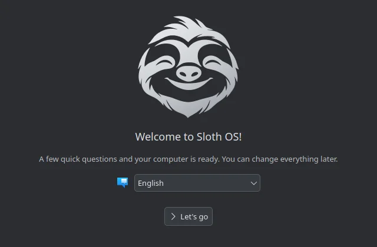
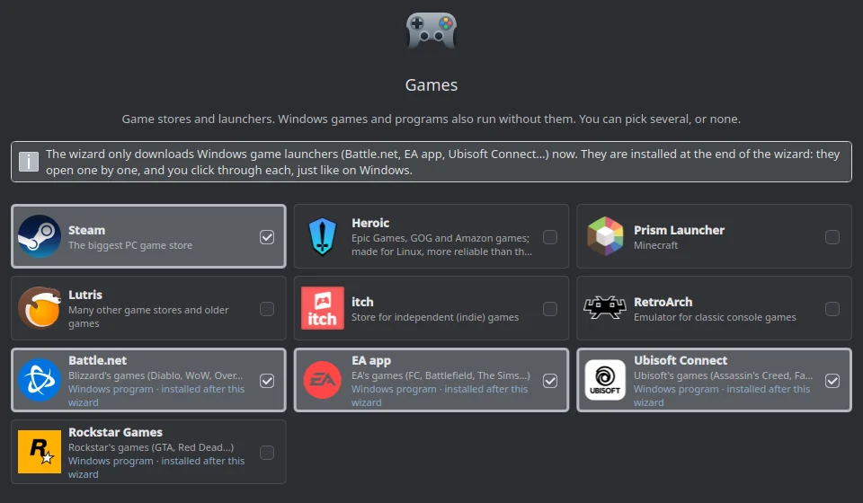
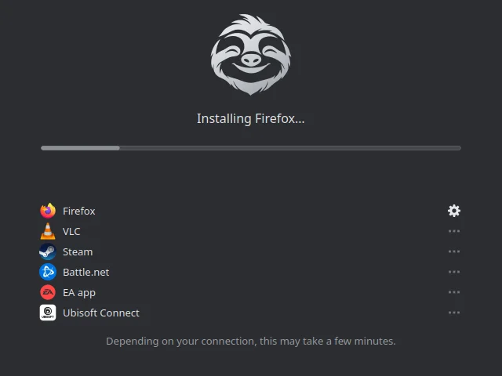

Sloth OS 1.0 is new. The whole-disk install, with or without encryption, is tested on real computers. Installing next to Windows works in our tests but has been tried on few real Windows computers; NVIDIA computers have not been tested yet, and older BIOS-only PCs are not supported. Back up anything important first.
Before you begin
Sloth OS is built on Universal Blue's Fedora Kinoite image with KDE Plasma. It is an atomic system intended to update in the background and offer a previous deployment at boot if an update causes trouble.
- Back up anything important before changing an operating system.
- You can try Sloth OS from the USB stick first: nothing changes on your computer until you choose to install.
- The download page explains how to make the USB stick and start from it.
What to expect
The USB stick starts a live system with its own Sloth OS installer: choose your language, then “Try Sloth OS” or install it. The installer can use the whole disk (optionally encrypted) or make room next to Windows. Startup shows only the Sloth animation: no boot menu and no text, unless the previous start failed.

After the first sign-in, the Sloth Welcome wizard helps you choose an appearance, sign-in options (PIN, fingerprint), whether to share compatibility results, your apps, and, if a Windows drive is found, which files and bookmarks to bring over.
Sloth OS does not preinstall a browser, office suite, media player or Steam. The Welcome wizard offers about sixty apps from Flathub (browsers, office, chat, music, games, creative tools) and Windows launchers such as Battle.net, EA app and Ubisoft Connect. Nothing is selected by default, and only what you install goes on the taskbar.


Choosing apps
In the Welcome wizard, choose one or more apps in the categories you need. You can skip everything and install apps later. A browser is needed to open websites. App downloads require an internet connection and enough free storage.
Windows programs use a separate compatibility feature. Read Windows programs and games before relying on it.
Help with testing
Reports are especially welcome from NVIDIA computers and from computers where Sloth OS was installed next to Windows. Send them from Sloth Center → Feedback: no account needed, and you can attach a log with one click.
If something goes wrong, open Sloth Center → System health → Save log. The log helps find the problem; check it before sharing, because it can contain your user name and device names.
Updates and rollback
Sloth OS updates itself in the background as a complete, signed system image. Only the parts that changed are downloaded, so a typical update is a few hundred MB. When an update is ready, a notification offers to restart (never in the quiet hours you can set in Sloth Center → Updates); Sloth Center → Updates shows the current version and whether updates are verified. The previous version stays available: if a start fails, the boot menu appears and you can pick it.
Your own files are protected separately: automatic snapshots (“Previous versions”), optional backups to an external drive, and “Reset this PC” in Sloth Center.